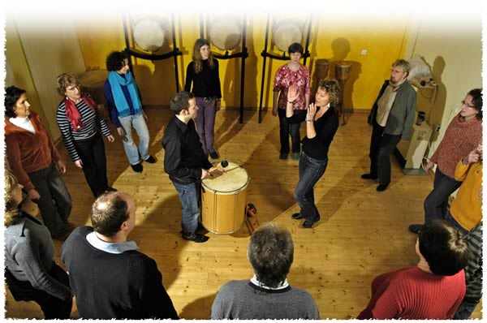

Taketina
Im TaKeTiNa® Prozess ist dein Körper selbst das Instrument. Während tänzerische Basisschritte von einer brasilianischen Basstrommel begleitet werden, entfalten sich im Klatschen und in der Stimme kontrastierende Rhythmen. Ein rhythmisch wechselndes Call-Response Singen – begleitet von dem brasilianischen Musikbogen Berimbau, bringt das improvisierende Element in den Prozess. So wirst du immer wieder herausgefordert: Du fällst aus dem Rhythmus, findest wieder zurück... In dem lebendigen Wechsel zwischen Harmonie und Chaos entwickelst du mehr und mehr Gelassenheit, während tiefgreifendes Lernen geschieht.
„TaKeTiNa vermittelt Rhythmus so, wie der Mensch ihn von Natur aus am besten aufnehmen und umsetzen kann. Anstatt beliebige Rhythmus-Patterns einzustudieren, wird der Lernende von Anfang an zur körperlichen Erfahrung elementarer Rhythmus-Archetypen geführt. Dies ist ein Lernen an den Wurzeln von Rhythmus, von dem aus sich der Lernende später in jede musikalische Richtung bewegen kann. Zugleich dient die TaKeTiNa Rhythmuspädagogik der Entwicklung des menschlichen Potenzials auf allen Ebenen. Es kann Fähigkeiten wie Präsenz, Kreativität, Umgang mit Chaos und Orientierungsfähigkeit in komplexen Situationen entwickeln.“
Reinhard Flatischler
Für wen ist TaKeTiNa?
- für Musiker, die sich für eine neuartige Weise des Lernens öffnen wollen. Manch ein Profi-Musiker steht im Rhythmuskreis zunächst wieder völlig am Anfang und ist herausgefordert, gewohnte lineare Pfade des Lernens zu verlassen. Der Verstand wird mit dem rhythmischen „overload“ gezielt überfordert und rationales Analysieren und „Zählen“ versagt. Doch dann tut sich ein neues Fenster des Lernens auf - in der Komplexität ruht eine Selbstverständlichkeit. Viele Musiker berichten, dass sie durch die Begegnung mit TaKeTiNa einen neuartigen Zugang zu ihrem musikalischen Schaffen bekommen haben.
- Für Menschen, die sich vom Rhythmus angezogen fühlen und eine Sehnsucht nach lebendiger Stille haben. Obgleich die Vielfalt an Klängen und Rhythmen, die äußerlich hörbar sind, höchst lebendig ist, entsteht Raum für stille, wache Präsenz. Für viele Menschen ist TaKeTiNa ein freudvoller Weg zu Meditation sowie eine „Lade-Station für die eigenen Akkus“.
- Für Chöre oder Bands, die sich rhythmisch stärker aufeinander einschwingen wollen. Im Rhythmus ist „ein Stückchen daneben mehr daneben als ganz falsch“. Gerade bei den interessanten Stücken fehlt manchmal die rhythmische Präzision, es klingt verhalten und es entsteht kein Groove. TaKeTiNa ist ein sehr effektiver Weg, rhythmische Kompetenz zu erlangen. Offbeat-feeling, das Gespür für Synkopen und verschiedene rhythmische Zyklen werden im Körperbewußtsein verankert.
- Für Teams, die neue Formen der Kooperation suchen.
Im TaKeTiNa Prozess stehen Musiker und Menschen ohne musikalische Vorerfahrung nebeneinander und können auf ihrem Niveau und im eigenen Zeitmaß lernen. Die rhythmischen Strukturen sind einfach und komplex zugleich. Nicht selten realisieren „rhythmisch Unbedarfte“ urplötzlich komplexe polyrhythmische Verhältnisse, wenn sie keinen Leistungsanspruch an sich stellen.
TaKeTiNa Seminare werden in der Regel mit zwei Kursleitern durchgeführt. (Leitung und Co-Leitung).
Tages-oder Wochenendseminare für Chöre, Bands oder Teams sind auf Anfrage möglich. Bitte nehmen Sie direkt Kontakt auf mit Ranvita Hahn, um Einzelheiten, Termine und Preise zu erfragen.
Rundfunksendungen und Presseartikel zu TaKeTiNa:
www.taketina.com -> lesen und anhören
